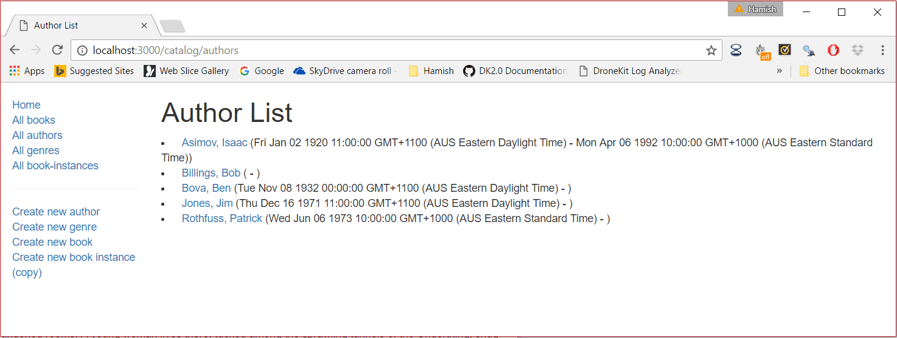
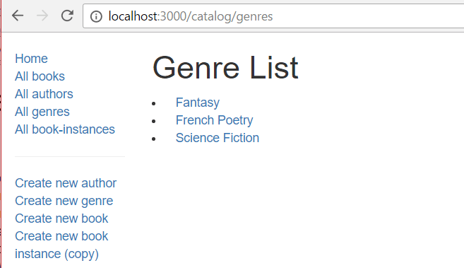

The author list page needs to display a list of all authors in the database, with each author name linked to its associated author detail page. The date of birth and date of death should be listed after the name on the same line.
The author list controller function needs to get a list of all Author instances, and then pass these to the template for rendering.
Open /controllers/authorController.js. Find the exported author_list() controller method near the top of the file and replace it with the following code.
// Display list of all Authors.
exports.author_list = function(req, res, next) {
Author.find()
.sort([['family_name', 'ascending']])
.exec(function (err, list_authors) {
if (err) { return next(err); }
//Successful, so render
res.render('author_list', { title: 'Author List', author_list: list_authors });
});
};
The method uses the model's find(), sort() and exec() functions to return all Author objects sorted by family_name in alphabetic order. The callback passed to the exec() method is called with any errors (or null) as the first parameter, or a list of all authors on success. If there is an error it calls the next middleware function with the error value, and if not it renders the author_list(.pug) template, passing the page title and the list of authors (author_list).
Create /views/author_list.pug and replace its content with the text below.
extends layout
block content
h1= title
ul
each author in author_list
li
a(href=author.url) #{author.name}
| (#{author.date_of_birth} - #{author.date_of_death})
else
li There are no authors.
Run the application and open your browser to http://localhost:3000/. Then select the All authors link. If everything is set up correctly, the page should look something like the following screenshot.

Note: The appearance of the author lifespan dates is ugly! You can improve this using the same approach as we used for the BookInstance list (adding the virtual property for the lifespan to the Author model).
However, as the author may not be dead or may have missing birth/death data, in this case we need to ignore missing dates or references to nonexistent properties. One way to deal with this is to return either a formatted date, or a blank string, depending on whether the property is defined. For example:
return this.date_of_birth ? DateTime.fromJSDate(this.date_of_birth).toLocaleString(DateTime.DATE_MED) : '';
In this section you should implement your own genre list page. The page should display a list of all genres in the database, with each genre linked to its associated detail page. A screenshot of the expected result is shown below.

The genre list controller function needs to get a list of all Genre instances, and then pass these to the template for rendering.
genre_list() in /controllers/genreController.js. author_list() controller.
title ('Genre List') and genre_list (the list of genres returned from your Genre.find() callback).Return to Express Tutorial Part 5: Displaying library data.
Proceed to the next subarticle of part 5: Genre detail page.